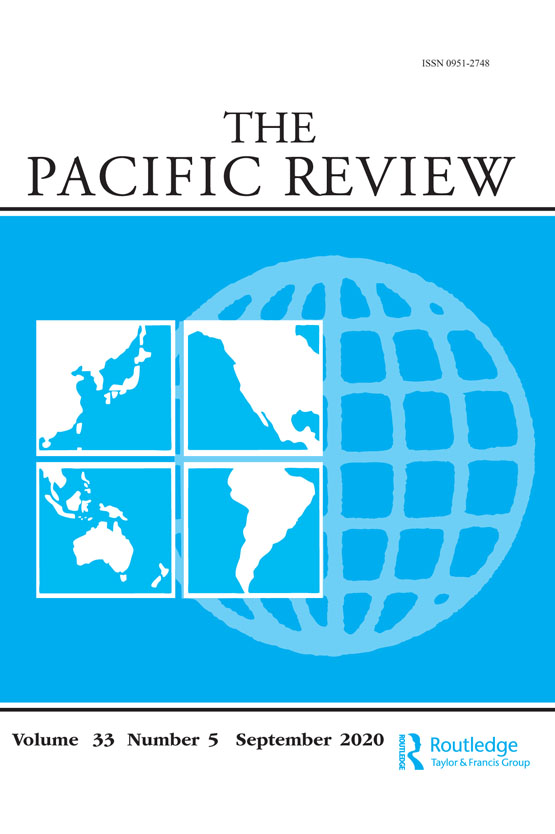
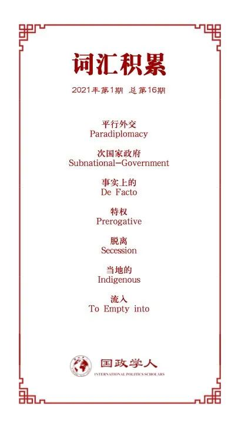

收录于合集

作品简介
【作者】 Martin Kossa，日本关西外国语大学助理教授，研究兴趣主要为中国对北极事务的参与；Marina Lomaeva，北海道大学国际事务部，大学-工业-政府合作协调员；Juha Saunavaara，北海道大学北极研究中心助理教授，研究重点是与北极的通讯和运输基础设施项目，以及北极与非北极行为体之间的关系。
【编译】 谢菁 （国政学人编译员, 早稻田大学博士生）
【校对】 崔宇涵
【审核】 扎西旺姆
【排版】 黄婷婷
【美编 】李九阳
【来源】 Martin Kossa , Marina Lomaeva & Juha Saunavaara (2020): East Asian subnational government involvement in the Arctic: a case for paradiplomacy?, The Pacific Review , DOI: 10.1080/09512748.2020.1729843
【归档】 《国际关系前沿》2021年第1期，总第28期。
期刊简介

《太平洋评论》（The Pacific Review）是太平洋地区研究的主要平台，作为跨学科期刊，其宗旨和目标为打破研究领域之间以及学术界、新闻界、政府和商界之间的壁垒。据Journal Citation Reports，2019年该刊的影响因子为1.633，在区域研究类SSCI期刊中排名11，在国际关系类SSCI期刊中排名第35。
东亚次国家政府对北极事务的参与：
**平行外交实例？
**
East Asian subnational government involvement in the Arctic:
a case for paradiplomacy?
Martin Kossa
Marina Lomaeva
Juha Saunavaara
内容提要
近年来，全球化的北极地区日渐涌入了许多该地区外的行为体，其中许多都来自东亚地区。虽然如今已有大量关于包括中国和日本在内的东亚国家在北极管理以及资源开发中所扮演角色的研究，但是少有研究关注东亚次国家政府 (subnational governments, SNGs)在北极愈加增多的参与。借助平行外交（paradiplomacy）这一概念以及Kuznetsov关于次国家政府国际参与的解释框架，本研究探讨东亚次国家政府北极参与背后的动机，以及其中央政府对其参与行为的态度。基于日本北海道以及中国黑、吉、辽三省的研究，本文认为东亚次国家政府们的北极参与主要是出于经济目的，特别是那些与北冰洋新航道相连接的次国家政府。科学合作也在次国家政府北极参与中发挥了重要作用。而在国家层面，这些东亚的次国家政府积极地与各自的中央政府交流互动，这些中央政府总体上也支持他们在北极的参与。
文章导读
01
前言
尽管近年有许多关于亚洲国家与北极关系的研究，东亚的次国家政府（SNGs）在北极的参与及其扮演的角色较少受到关注。仅有的相关研究虽然提供了丰富的实证信息，但缺少严密的理论或概念的框架分析。本研究聚焦于日本北海道以及中国的黑龙江、吉林和辽宁三省关于北极地区的参与。 借助平行外交（paradiplomacy）的概念及Kuznetsov的相关解释框架，本研究提出下列研究问题：东亚地方政府参与北极事务的动机是什么？中央政府们对于地方政府参与北极活动的态度是什么？这样的平行外交行为对于这些地区自身和国家而言有怎样的成果和影响？
02
平行外交与次国家政府的国际行为
既存的关于东亚次国家政府国际行为的研究，很少将平行外交作为它们的概念基础。在日文或中文的语境中，日文的“自治体外交”（jichitai gaikō）或者中文的“次国家政府外交”更多地被使用。本文使用了Kuznetsov的统合解释框架，这个模型提出了六个关键的问题：（1）某一地区平行外交行为迅速发展的原因是什么？（2）其法律依据是什么？（3）其参与国际事务的主要动机是什么？（4）平行外交在这个地方是如何被制度化的？（5）中央政府对这些地方的平行外交的态度是什么？（6）平行外交给整个国家带来怎样的影响？本文关注其中的问题（3）（5）（6），因为这些在北极参与的背景下是最有探讨价值的问题。
如果按照Duchacek的概念划分来看的话，本研究可以被归类为全球平行外交（global paradiplomacy）。比起专注于国界两侧相邻地区关系的跨边界地区外交（transborder regional diplomacy）,或者专注于邻国而不接壤地区关系的跨地区平行外交（transregional paradiplomacy），本研究关注的是地理上远离的次国家政府国际行为。不过本研究所着眼的部分行为也属于上述的后两类。
Kuznetsov的第三个问题（动机）是平行外交相关研究中被讨论得最多的。这些错综复杂的动机至少可以被归纳为经济动机（比如吸引外资及海外游客、寻找海外市场、支持本地企业国际化以及技术转移等），政治动机（比如通过国际合作寻求民族认同或正当化、使用国际平台对内实现内部区域建设或者展现领导者能力等），文化动机（比如与国外拥有相似文化或者语言认同的次国家政府合作），和其他包括环境、危机管理、交通、基建和移民等在内的跨边界合作。
如果想要理解次国家政府国际行为的特征，探究各国中央政府对于平行外交的态度（问题5）也是与之紧密相关的。虽然本文不打算将本研究所涉及的中央政府- 地方政府逐一以合作、协调和矛盾的不同程度分类，但本文也承认分析中央政府管控的程度和机制以及国家可能的证明期待和支持是有必要的。次国家政府行为与中央政府政策的潜在矛盾也和第6个问题（影响）是相关的。
03
**
**
全球利益与东亚地区的北极参与
从海冰的融化到冰冻层的消融，北极所面临的挑战在全球范围内得到了讨论。这些也关联着碳氢化合物与其他采掘业的发展以及新航道的使用等带来的可能性。这些变化带来的北极的动植物群、当地民众、国际关系的变化被北极边界以南的许多地区所研究。因此，全球化的北极地区最近迎来了大量的区域外参与者，其中许多来自东亚。
日本不断增长的北极利益
日本最早的北极参与可以追溯到1920年斯瓦尔巴条约的签订和50年代开始对北极的研究，而其利益的多样化以及参与的加强始于90年代。1991年，日本在斯瓦尔巴特群岛的新奥勒松建立了永久研究站，并申请了国际北极科学委员会（IASC）的会员资格。两年后，由挪威、日本和俄罗斯发起的国际北海航线计划（INSROP）启动。该项目的第1阶段（1993–1995）和第2阶段（1997–1999）研究了北海航线（NSR）的潜在利用可能，并最终由日本国家北海航线计划（JANSROP）所继承，该计划一直持续到2005年。2009年，继中韩两国之后，日本申请成为北极理事会（Arctic Council）观察员。同时，外务省（MOFA）设立了北极特别工作组和专门负责北极事务的大使职位；国土交通省（MLIT）对于北海航线的利用可能进行了调查；文部科学省（MEXT）发起了GRENE北极气候变化研究项目（2011-2016）以及北极可持续性挑战项目（2015-2020）；综合海洋政策本部于2015年制定并宣布了日本首项北极政策，强调了科技合作、国际合作、稳定的安全环境、可持续性、尊重当地人民以及北海航线的潜力。日本还起草了2014年极地水域船舶航行安全规则和2018年防止在北冰洋中部无序公海捕鱼的国际协定。
中国通向北极之路
与日本相似，中国也从1990年代开始积极参与北极活动。它在1996年加入IASC，然后在1999年首次进行了北极正式科学考察。从那以后，通过对内不断扩大针对北极的科研机构和基础设施，并通过对外展开与国际组织与地区行为者的合作，中国稳步地拓展它的北极参与实绩。迄今为止，中国已组织了十次北极研究考察队，于2013年成为北极理事会观察员，并于2016年任命了北极事务特别代表。自2012年以来，中国开始自称为“近北极国家”。除了在斯瓦尔巴群岛的研究基地外，中国还于2018年与冰岛研究机构合作在冰岛建立了北极科学观测站，正在考虑在格陵兰岛建立另一个研究站。它还在2018年推出了第二个破冰船雪龙2号。同时，中国的大型国有企业正在利用北极的运输路线将货物运往欧洲，并投资了北极圈内的资源开采项目，例如俄罗斯极地的亚马尔液化天然气项目。
中国在北极地区的利益在其2018年发布的《中国的北极政策》白皮书中得到了阐述。该文件概述了中国的区域目标，包括：（1）了解北极，提高北极的科学研究水平和能力，（2）保护北极，积极应对北极的气候变化，（3）利用北极，专注于北极技术创新和北极资源的勘探与开发，（4）参与北极治理，参与与北极治理体系有关的事务和活动。随着白皮书的发布，中国还正式将北极地区（连同运输路线）纳入其“一带一路”倡议中，以建设极地丝绸之路。
04
北海道：新北极愿景的北方合作先驱
日本可以说是一个具有强大集权传统的统一国家，因此日本次国家政府开展国际活动的法律基础比许多其他国家都薄弱。日本宪法明确指出，内阁负责外交政策，没有任何条款明确授权北海道的平行外交。但是，宪法和地方自治法均未禁止北海道或其他县进行国际行动。因此，尽管先前有过明确次国家政府国际活动的法律依据的尝试，但各地区政府仍是在比较暧昧的环境中推进其平行外交举措。
日本次国家政府国际活动的加强
尽管日本的中央政府长期以来在对外事务中占据主导地位，但早在2005年Jain就指出，新的行为体在日本的对外关系中已变得举足轻重，而且他强调了次国家政府作为新的主要施动者的角色。尽管与北美和西欧的次国家政府相比，日本次国家政府总体上开展平行外交活动较晚，并且尽管次国家政府之间就对外事务的兴趣和参与程度仍然存在很大差异，但其中有些早在冷战时期就已经参与了国际交往。50年代日本次国家政府就有和美国的次国家政府结为姐妹城市的尝试，这种发展也促成了与苏联和朝鲜等国家的地方政府的合作，尽管是在日本与这些国家关系紧张的时期。在80年代末期和90年代，日本次国家政府的国际活动进一步增强，并从“交流”演变为“合作”。它们的目的和宗旨也从象征性的善意转变为共同的（往往是经济的）利益。
次国家政府国际活动的增多也导致中央政府各部门之间的竞争关系，以及支持地方行为体的平行外交活动的制度化。次国家政府在国际事务中的参与不断增加是受到管理地方政府的总务省支持的，这扩大到了（本可能）由外务省所控制的领域。尽管外务省试图保护其控制的地盘，但它也逐渐与新的行为体（次国家政府）建立了良性的伙伴关系。另外，日本在1988年还成立了自治体国际化协会（CLAIR），协助次国家政府的国际化。
北海道的北方前景与北极利益
北海道一直是日本次国家政府参与国际活动的先驱，而地理位置无疑可以部分解释其与国外次国家政府的联系。要了解北海道为什么（以及如何）能积极参与国际合作，即必须分析于1971年首次纳入北海道全面发展计划的一项被称为“北方圈构想”的政策。该政策启动后，寄望于北海道与俄罗斯远东其他北部地区、美国阿拉斯加以及加拿大不列颠哥伦比亚省和艾伯塔省之间的经济合作，后来还扩展到斯堪的纳维亚半岛上的国家。该政策的制度化在70年代初得到了发展，北方研究委员会作为私人组织成立，北海道政府也成立了北方研究办公室。这项政策的全盛时期是80年代和90年代，但最终并入了2011年成立的北海道国际交流与合作中心（HIECC）。HIECC不仅专注于与北方圈的合作，而且还致力于北海道地区所有国际交流与合作的协调。此外，许多由北海道行为体促成的组织，比如北方论坛（NF）、世界冬季城市市长会、西伯利亚- 北海道文化中心等，都还在继续它们的活动。
尽管北海道的国际活动的重点总体来说一直放在东亚和东南亚，但在过去十年中，它重燃了对北方圈和北极事务的兴趣。北海航路的未来前景以及它成为东亚枢纽的可能性是北海道对北极抱有兴趣的主要原因。从2010年代前半期开始，北海道政府开展合作研究新航路的可能性。同时，它与北海道经济同友会以及北海道大学的合作也从2015年开始变得越来越重要。北海道政府不但参与将北极相关的实际知识引入的活动，也积极向外输出。而且，来自北海道政府的代表也与海外的利益相关团体进行交流。在北海道政府内的许多部门也都参与北极相关的事务。
05
黑龙江、吉林、辽宁：
连接中国、俄罗斯远东以及北极
虽然宪法并没有提到省级政府在中国对外关系中的角色，但1978年改革开放之后，这些次国家单位成为了中国内务和外事中的重要角色。这给中国的中央地方关系开拓了新方面，以至于有的研究者认为中国的政治体系上已经成为了事实上的联邦制（de facto federalism）。1978年后的改革是中国地方政府对国际事务感兴趣的主要驱动力，因为这些行为体积极寻求与外国建立经济联系，以获得投资机会，以推动自身的社会经济发展。
中国中央地方关系中的国际事务方面
目前，中国的次国家政府正在采取各种形式的平行外交活动。中国各省市不仅进行海外访问并接待外国代表团，而且还积极组织各种致力于地方参与的会议，例如中日韩友好城市交流大会，并加入专注于保护和促进地方利益的国际组织，例如世界城市和地方政府联盟（UCLG）。此外，边境省份还利用自己的地理位置，努力成为中国与周边地区之间的门户，例如云南和广西在区域跨境贸易和与东南亚一体化中的作用。除了直接接壤的邻国，中国的地方政府还与非洲等遥远的大陆上的国家交往，作为贸易商，项目建设者，投资者，援助者和中非关系的促进者发挥着作用。
这些行为对重要和地方而言都是有利的。中央依靠地方来执行其许多外交政策项目并管理边境地区的非安全问题。反过来，地方政府可以通过为中央的国家间外交作补充以提高自身国际地位，并追求自身利益，促进其经济增长并扩大进入海外市场的机会。因此，地方的政策举措，尤其是边境地区，为推进中国的国家战略提供了基础。
中国东北与北极：振兴与新运输通道
由于中国东北的地理位置以及与它们北极地区的相对距离，再加上它们对经济发展以及进入海外市场的需求，近年来，黑龙江、辽宁和吉林省对北极的机会表现出兴趣。由于传统上专注于重工业，这些省在经济现代化方面一直落后于南部沿海省份。国务院已经敏锐地意识到了这些问题，并且已经制定了振兴该地区的官方政府战略，侧重于经济改革、创新、基础设施发展、高科技产业，以及以中国东北为中心的东北亚地区一体化。就此而言，更好的出海通道、更短的北极航线可以帮助这些省份更高效地抵达欧洲和北美市场。这反过来又能提升这些地区企业的竞争力。
黑龙江与俄罗斯有着很长的边境线，于1991年就加入北方论坛（NF），开始它在北极地区的活动。虽然它在2011年暂停了在北方论坛的活跃身份，但是持续强调其与北极地区的联系，其省会哈尔滨于2016年与俄罗斯的摩尔曼斯克签订了关注旅游与教育的友好城市协议。由此黑龙江成为了中国与俄罗斯远东以及北极地区的枢纽。在2017年中国将北极地区纳入“一带一路”倡议以后，黑龙江（尤其是黑河）开始标榜自身作为中俄合作拓展的最佳平台以及冰上丝绸之路的“黄金支点”。
辽宁作为面向黄海的沿海省份，有着大连这样的强大集运港和优秀的港口网路，拥有东北地区十分有利的地理位置。目前，辽宁正推进“辽海欧”运输通道，通过北极航线来连接辽宁与欧洲。此通道于2018年正式启用，将本省的铁板桩运往欧洲各处。北极航道是辽宁通往西欧和北美的一条捷径，也是影响该地区工业重心再分配的推动力。所以辽宁十分了解其北极航运的利益，也因此积极推动北极相关的，包括航运、海洋安全以及国际法等方面的研究。
吉林虽然是一个内陆省份，但它离注入日本海的图们江三角洲（入海口）只有15公里。如果吉林能使用这个通道，它的出口潜力将大大增强。因此，吉林在推进其“借港出海”的策略，也就是使用邻国的港口来出口自己的货物。这个策略也是吉林与北极航路相联系的一种方式。吉林的官员曾表态，本省打算与俄罗斯和朝鲜的一些港口合作，通过东北通道来缩短欧洲货运航路。这个想法也在吉林的绿色发展计划中被强调。
06
东亚的次国家政府与北极：
**** 比较分析
参与北极事务的目的
次国家政府海外活动的经济上、政治上的各种动机时常是共存而交错着的，难以将它们分离开来。但很明显，经济因素在北海道、黑龙江、吉林与辽宁参与北极地区事务中起着重要的作用。
对北海道来说，很多展望都与地理优越性这一概念相联系，包括地方政府在内的当地行为体都认为北海道在东亚最东北角这一地理位置能为其区域经济发展带来可能。关于北海道的讨论主要集中在港口（特别是苫小牧）以及其发展成为北海航线中心枢纽港口的潜力。使用从东亚到欧洲及北美的货运路线会经过连接日本本州岛和北海道的津轻海峡，当地可以为往来的船运提供很多服务。北海道也被考虑为北极光缆的一个可能的着陆点。而且，北极带来的经济机会与和位于北极地区的俄罗斯次国家政府的合作有重叠和交叉的地方。与俄罗斯的合作和交通基建对于黑龙江的经济动机也十分重要。由于中国和俄罗斯达成协议通过开发“滨海1号”和“滨海2号”国际运输走廊，黑龙江将能够有效获取通向日本海的通道。吉林也着眼于基建发展和与俄罗斯的联系，例如，2014年，吉林省政府与一家俄罗斯公司协议在扎鲁比诺共同开发新的深水港。吉林还考虑过通过朝鲜港口进入日本海。但是，鉴于中朝关系的动荡，其前景并不明确。直到最近，连接吉林吉安与朝鲜边境城市满浦的新桥才开通。辽宁将北极航运路线视为“新的轴心航线”，这为辽宁打开了通往欧洲最短、最经济、最高效的海路。这种与俄罗斯和朝鲜建立新贸易路线的努力，以及与欧洲市场建立联系的愿望，表明了这些地区北极航运潜力的兴趣，并为东北各省提供了利用冰上丝绸之路的机会。
中央地方关系中的北极
日本的中央政府对于北海道的北极参与一直抱有积极态度，北海道也很积极地对中央的决策者进行游说。北海道对日本北极政策的贡献在主要的国际论坛上得到了认可。例如，当日本外务大臣河野太郎在2018年10月的北极圈活动上发表演讲时，提到北海道是从亚洲通往北海航线的门户。最近的发展也表明，中央政府应该会继续支持北海道的倡议。如果像日本一些相关专家所说，首相安倍晋三正积极鼓励日本公司参与俄罗斯北极项目，这可能表明中央政府对北海道的发展也有类似的支持。经济产业省决定在北海道的札幌举行第七届日俄中小企业合作的会议，这可能也可以被视作朝这个方向发展的努力。
一带一路倡议和冰上丝绸之路是东北各省主要希望凭借以支持其经济振兴的代表性国家战略。同样的，习近平在巡视东北时强调，这个地区应该积极培育新的增长点，并更好地融入“一带一路”倡议。黑龙江省委也在2018年的声明中提到，该省被视为一带一路的交通枢纽和中俄在冰上丝绸之路合作的主要平台。鉴于这些发展，中国的次国家政府可以被视作有自己计划的国际参与者，不过，这必须保持在党中央的战略考虑和框架下。
无论是中国还是日本，中央地方政府间关于北极事务都缺少冲突和碰撞，这可能有以下几种解释。这可能意味着国家政府和次国家政府就期望的或可接受的行为达成了更大的共识。 事实上，就中国而言，可以说地方政府如果想要挑战中央政府的话是违背其政治制度的本质的。不过，也可以推测， 即使一些事务没有被放在国家外事和安全政策的重心上时，次国家政府也拥有积极参与这些事务的自由。 但是，要做出次国家政府在某一特定事务或者空间背景下有了更大的自主余地这一结论的话，还需要对中国和日本平行外交进一步的研究。
开了花却尚未结果
关于平行外交的结果和影响的问题目前还难以回答。虽然即使没有北海道的积极参与，日本也会加强对北极事务的参与，但北海道的积极活动支持了日本作为北极参与者的角色。北海道已经能够将北极航运以及海底光缆等新内容纳入到国家的北极议程，而且它关于北极的合作也加强了地方政府和学校以及企业的联系。虽然这个经济机遇还没有兑现，这些活动似乎也对原有的振兴北部地区的计划作出了贡献，这也体现在了与俄罗斯次国家政府的合作中。
尽管中国在北极的参与主要是由中央制定的政策所推动的，支持这些政策对次国家政府们而言也有利可图。通过多样化其发展战略以囊括北极相关的经济机遇，中国的东北各省可以看到其航运、物流、港口、造船、保险和电商等方面的发展。这些反过来又有可能可以改变其经济结构，将东北的港口城市变成服务东北亚的国际物流中心。而且，一带一路的倡议又非常可能可以振兴该地落后的经济。因此, 东北的平行外交可以被看作是省级层面国家建设的一种特殊形式，它们的对外关系使得这些地方能够开拓经济发展的对内机会。简而言之，地方的北极参与可能对于中央领导者而言也是有益的，因为这能减轻一些东北省份所面临的经济困难，而且可以提升中国作为北极参与大国的形象。
07
讨论
尽管东亚次国家政府们显然能够与不同类型的北极行为者进行合作，它们是否有兴趣并能与彼此相互合作还是一个问题。因此，Bennett在2014年就提出的有关在亚洲- 北极或北太平洋北极地区进行微边合作（mini-lateral cooperation）的想法值得被重新探讨。Bennett认为，北太平洋内部的某些团体之间的联系远比其同一国家却相距遥远的团体之间的联系更为紧密，她将北方论坛视为次国家层面上亚洲向北极地区政治一体化的体现。在谈到阻碍北太平洋北极地区建设进程的障碍时，她强调了北极理事会成员国对这一尝试的态度以及北太平洋地区内部现有的不信任感。虽然有一些国家层面、地方层面乃至学术界层面上中日韩合作的例子，但是鉴于其不突出的成就以及缺乏国内外影响力这一事实，前景并不乐观。当前在北方论坛中没有日本或中国成员的事实可能说明，东亚次国家政府在与北极地区次国家政府的互动中依赖的是双边主义的框架而不是多边主义的框架。国家层面上仍然存在未解决的问题也影响了地方层面的接触。尽管如此，如果想要在北海航路之类的事务上发挥作用，东亚这些处于北部边缘的次地方政府之间的合作是非常迫切的。
译者评述
本文的独创性之一就在于研究主题本身，作者们从平行外交的视角分析了一个较少受到关注的研究主题：东亚次国家政府的北极参与。虽然关于次国家政府对外事务参与的研究已经得到了不少关注，除了作者们所提到的Kuznetsov的paradiplomacy框架以外，还有Soldatos，Hocking， Duchacek等人较早的研究都为次国家政府的对外参与提供了观点。但是这些研究主要关注美国、加拿大和一些欧洲国家，少有研究对东亚（尤其是中国和日本这样有着集权于中央显著特征的）案例进行考察。而且，即使是聚焦于东亚的研究，大多也是专注于某一国家视角出发的的研究，比如Jain早在2005年的关于日本自治体对外参与的专著，以及陈志敏、熊炜、Peter Cheung、James Tang等学者关于中国的研究。本文的作者将日本和中国这两个东亚国家的北方次国际行为体进行比较分析，不仅阐述了北海道、黑龙江、吉林和辽宁参与北极事务的实践、策略、展望，还将它们联系起来，分析了其动机和与各自中央政府的互动。另外，本文运用中文、日文、英文、俄文资料提供了详实又具体的事实证据，也是该研究的亮点所在。不过，该研究也有一些有待更详细说明的问题。比如说，作者们虽然用了平行外交的研究框架，但是没有具体交代为什么中国和日本的情况是适用于这个概念的，这涉及到次国家政府是否能作为独立行为体的问题。
词汇整理

例句
1. paradiplomacy 平行外交
例句：The intensification of SNGs’ international activities led to competition among the central government ministries and to the institutionalization of the structures supporting regional actors’ paradiplomacy.
2. subnational-government 次国家政府
例句：As a result of the 1978 reform and opening-up policies, these subnational units became important politico-economic actors in China’s domestic development and external affairs.
3. de facto 事实上的
例句：Some analysts declared the Chinese political system a de facto federalism.
4. prerogative 特权
例句：International relations and activity are not the prerogative of nation- states and national governments.
5. secession 脱离
例句：the empirical cases examined in this study possess no direct links to issues, such as territorial secession, that are often discussed in the theoretical research literature.
6. indigenous 当地的
例句：The impact of these changes on the Arctic flora and fauna, indigenous people and international relations have, likewise, been analysed in areas far south of any lines attempting to describe the borders of the Arctic.
7. to empty into 流入
例句：This means that it is only 15 kilometres upstream from the Tumen River delta, which empties into the Sea of Japan.
文章观点不代表本平台观点，本平台评译分享的文章均出于专业学习之用, 不以任何盈利为目的，内容主要呈现对原文的介绍，原文内容请通过各高校购买的数据库自行下载。

国政学人
支持学术公益与知识传播
微信扫一扫赞赏作者 __赞赏
已喜欢，对作者说句悄悄话
取消 __
发送给作者
发送
最多40字，当前共字
上一页 1/3 下一页
长按二维码向我转账
支持学术公益与知识传播
受苹果公司新规定影响，微信 iOS 版的赞赏功能被关闭，可通过二维码转账支持公众号。